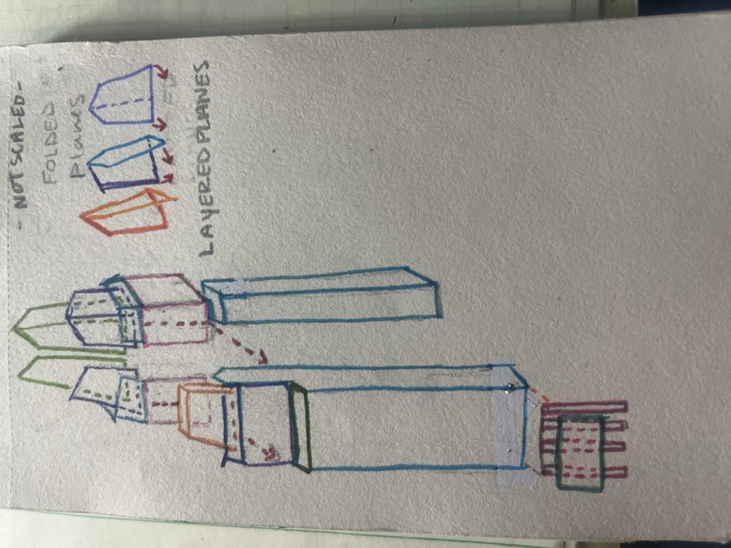

Frost Bank Tower Study
This page documents measurement uncertainty, reference sources, and site considerations for the parametric CAD study. This is an architectural research model — not construction documentation.
Dimension confidence
Values are classified by how they were obtained. Anything marked Estimated should be verified against survey data, as-built drawings, or architect-of-record documents before use in professional work.
| Parameter | Value | Status |
|---|---|---|
| Total height | 515 ft (157 m) | Published |
| Roof height | 400 ft (122 m) | Published |
| Crown height | 99 ft (30 m) | Published |
| Floor count | 33 | Published |
| Leasable area | ~525,000 sf | Published |
| Site area | 1.7 acres (Block 42) | Published |
| Footprint (186′ × 128′) | Rectangular base | Estimated |
| Crown setback schedule | 7 step increments | Estimated |
| Typical floor plate | ~126 ft equivalent | Derived |
| Parking levels | 11 | Published |
| Subsurface / foundation depths | Not modeled | Not available |
Sources
-
Duda|Paine Architects — Frost Bank Tower
Design narrative: rectangular base transitioning to a square crown; folded glass planes; limestone podium with stately aesthetic for parking levels.
dudapaine.com/featured-projects/workplace/frost-bank-tower -
Wikipedia — Frost Bank Tower
Height, floor count, crown dimensions, site history (Block 42 consolidation 1998–2001), architects (Duda/Paine + HKS), groundbreaking November 2001.
en.wikipedia.org/wiki/Frost_Bank_Tower - Site address & coordinates 401 Congress Avenue, Austin, TX · 30.266489°N, 97.742689°W
- Parametric model file frost_tower_dimensions.py — editable dimension registry for this study
Site & ground considerations
Downtown Austin sits on the Colorado River floodplain terrace. The Frost Bank Tower site at Congress Avenue and 4th Street is roughly six to eight blocks north of the river channel. Proximity to a major water source influences subsurface conditions, groundwater behavior, and long-term settlement considerations — none of which are modeled in this study but should inform any foundation-level CAD or BIM work.
Water proximity
The Colorado River and Lady Bird Lake lie south of the central business district. Downtown sites commonly encounter variable water table depths, alluvial soils, and clay-rich formations. Exact borings for Block 42 are not cited in this portfolio study.
Age of ground & redevelopment
Prior to construction (2001–2003), Block 42 held older brick commercial buildings and the Mexic-Arte Museum lease area. Demolition and regrading of prior fill layers means the tower bears on engineered foundations placed after site clearing — not pristine native strata. Published history notes land consolidation beginning in 1998 and clearing in November 2001.
Capitol view corridor constraints
Municipal height limits along Congress Avenue were set to preserve views of the Texas State Capitol. The built height (515 ft) reflects those zoning envelopes; early proposals were lower (27 stories / ~352 ft) before the Cousins Properties design.
Layering reference sketch

#7298C7 — curtain wall envelope & crown cap
Soft Linen #F5F1E6 — limestone podium & site pad
Morning Butter #F3D98F — folded crown transition facets
Cherry Blossom #F5A8A8 — core, crown infill slabs & parking strata
Color palette from 346eur — author of Colors for Designers. 346kit.com/CFD
CAD design review (massing study)
Subjective engineering review of the parametric massing model — architectural research geometry, not fabrication-ready mechanical CAD.
| Category | Score | Notes |
|---|---|---|
| Geometry quality | 7 / 10 | Folded crown facets and layered strata match sketch intent; hollow curtain wall added. |
| Manufacturability | 5 / 10 | Massing-only — no draft, fillets, or curtain-wall mullion detail expected at this fidelity. |
| Structural soundness | 6 / 10 | Core load path modeled; solid blocks replaced with shell envelope to reduce false mass. |
| Parametric robustness | 8 / 10 | Dimensions and palette centralized in frost_tower_dimensions.py. |
| Overall engineering quality | 7 / 10 | Strong study model after parking geometry correction and shell-based envelope. |
AutoCAD 2025 Mac
Parametric DXF export for editing in AutoCAD — same dimensions as the web study. Open the .dxf directly (not the old .dwg placeholder).
- frost_tower_study.dxf — 3D massing at origin + 2D sheet views at X 2500 ft
- generate_frost_dwg.py — regenerate with
python3 generate_frost_dwg.py frost_setup.scr— after opening DXF, typeSCRIPT→ zoom to sheetfrost_save_dwg.scr— optional: save native.dwginside AutoCADfrost_tower.lsp—APPLOADthenKFFROST(sheet) orKF3D(massing)
Layers: A-PODIUM, A-GLASS, A-CROWN, A-CORE, A-PARKING, A-SITE. Units: feet.
What this study does not claim
- Survey-grade footprint or setback dimensions
- Geotechnical or hydrological analysis
- Code compliance or permit-ready drawings
- Authority over architect-of-record (Duda|Paine / HKS) documents
For construction accuracy, consult licensed survey, geotechnical reports, and official architectural construction documents.
Kristen Fenwick · Portfolio CAD study · Jun 2026